01
HCP Yönetimi
— Hızlı müşteri içgörüsü.
Reçete yazan sağlık profesyonellerini segment değerine göre önceliklendirin.


Inception CRM, HCP etkileşimini hızlandıran, haftalar içinde hayata geçen ve büyüdükçe ölçeklenen farma odaklı bir CRM platformudur. Şeffaf, sade, satıcı bağımlılığı yok.
— Hızlı müşteri içgörüsü.
Reçete yazan sağlık profesyonellerini segment değerine göre önceliklendirin.
— Akıllı zaman yönetimi.
Bölgeleri yalnızca reçete hacmine değil, gerçek potansiyele göre dengeleyin.
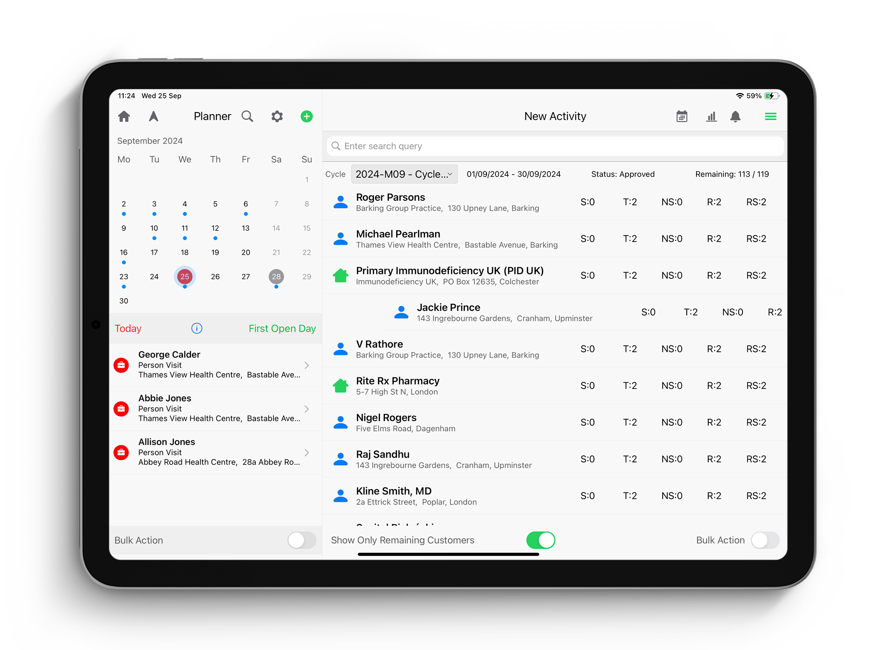
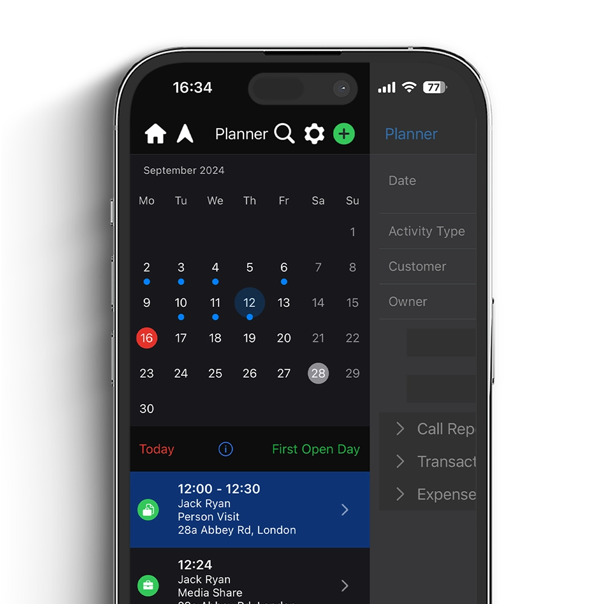
— E-posta yerine işbirliği.
Ekipler ve paylaşılan hesaplar arasında görev ve istekleri koordine edin.
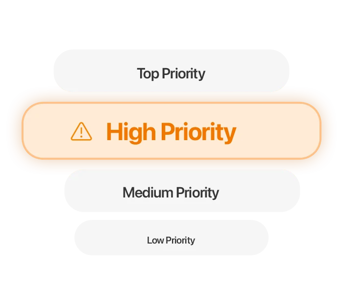
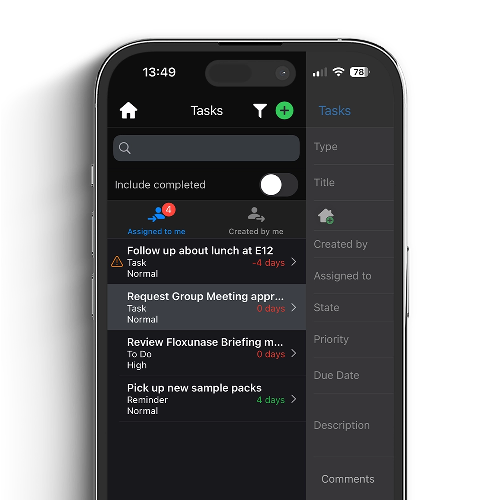
— Müşterinizle her yerde.
Eklenti olmadan, CRM içinden sanal HCP görüşmesi yapın.
— Onaylı içeriği güvenle paylaşın.
Onaylı içerikleri ajans olmadan oluşturun, sunun, paylaşın; HCP etkileşimini ölçün.
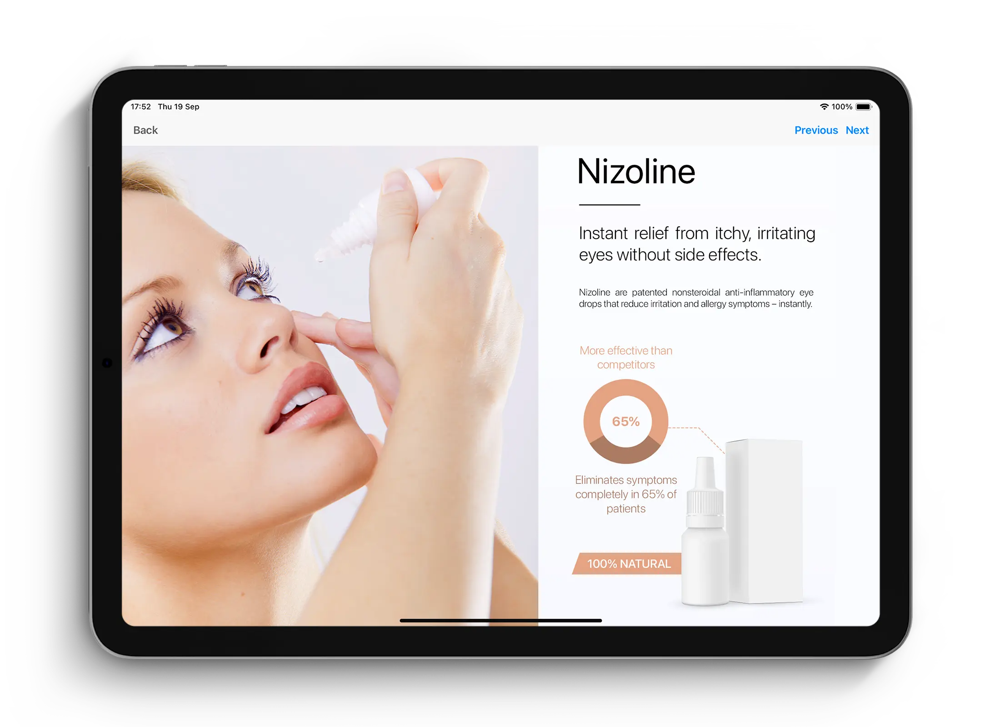
— Projeler, sözleşmeler, etkinlikler.
Farma etkinlikleri ve sözleşmeler için otomatik, uyumlu iş akışları.
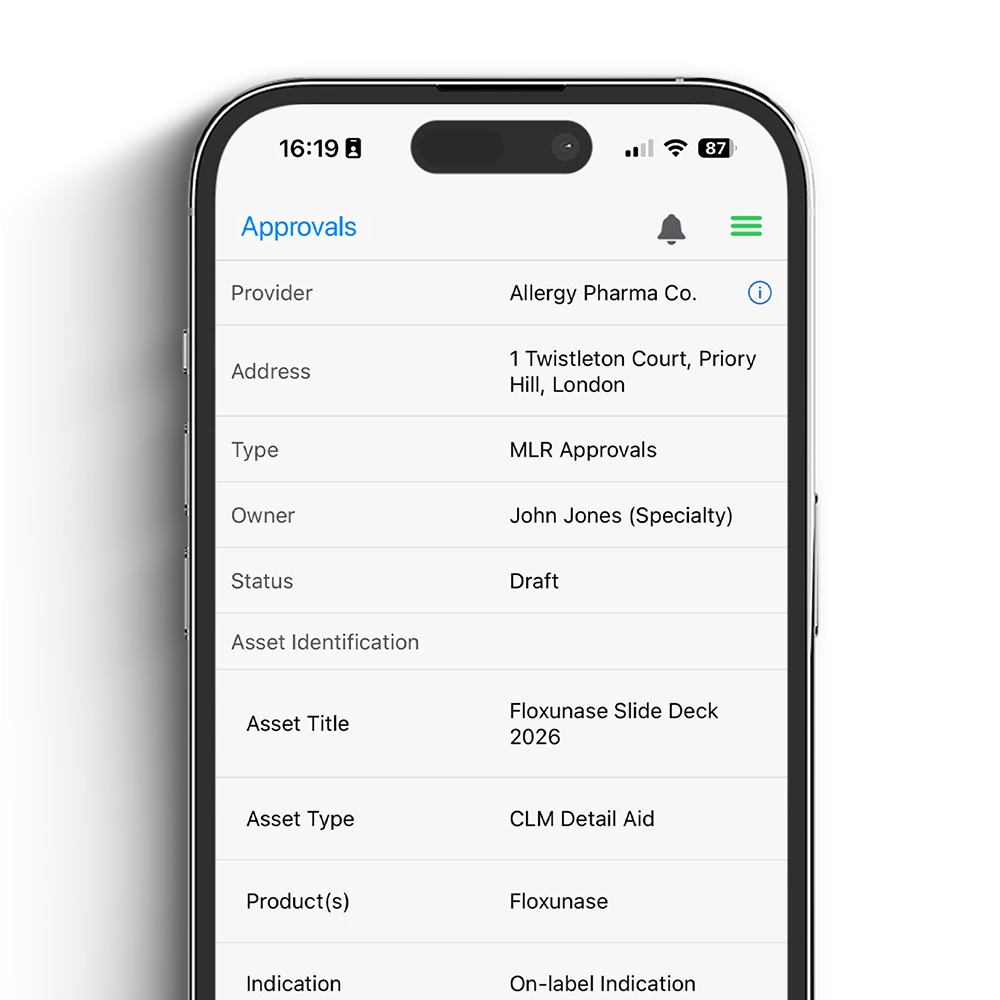
— Yaşam bilimleri için gelişmiş.
Her satış noktasında sipariş oluşturun, zenginleştirin ve takip edin.
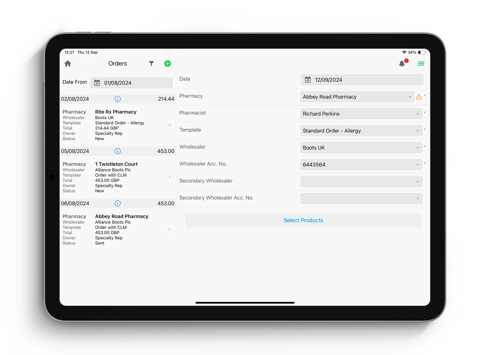
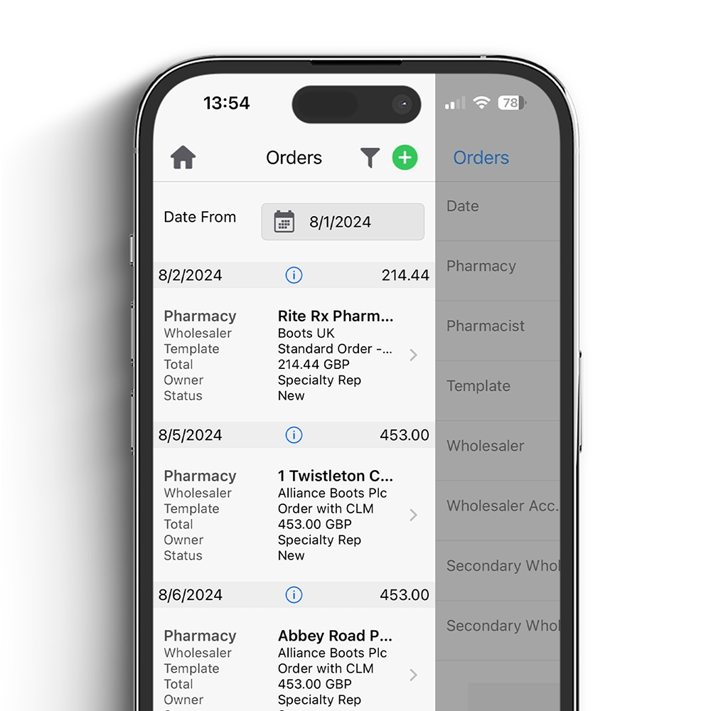
— Uyumlu numune ve stok.
Numune ve promosyon stoklarını tam uyumlulukla yönetin.
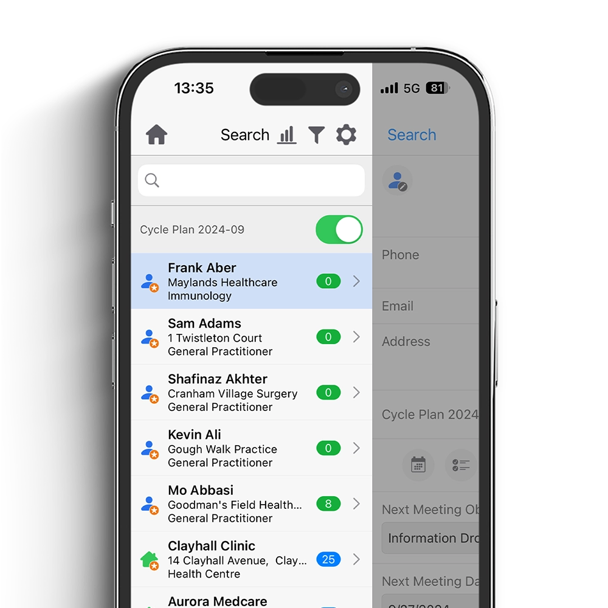
— Hareket halinde raporlayın.
Temsilcilerin saha harcamalarını anlık yakalayın; bütçeyi yönetin.
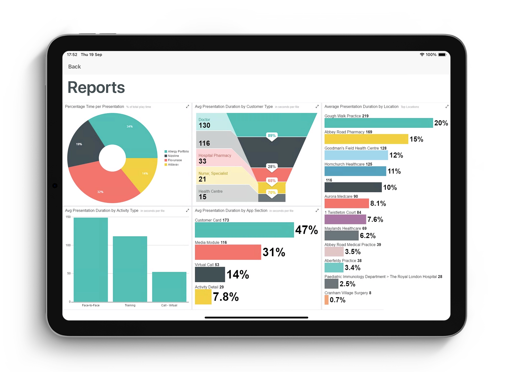
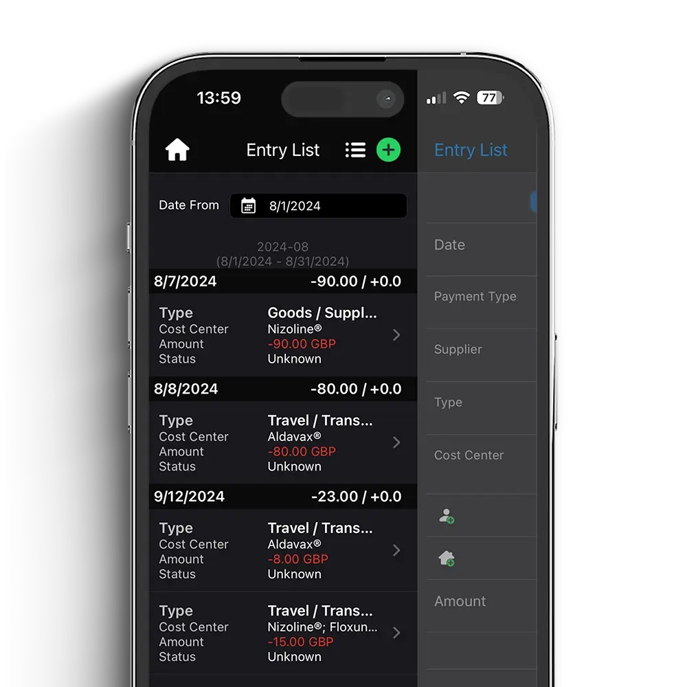
— Panolar ve raporlar.
Saha aktivitelerini ve müşteri içgörülerini gerçek zamanlı izleyin.
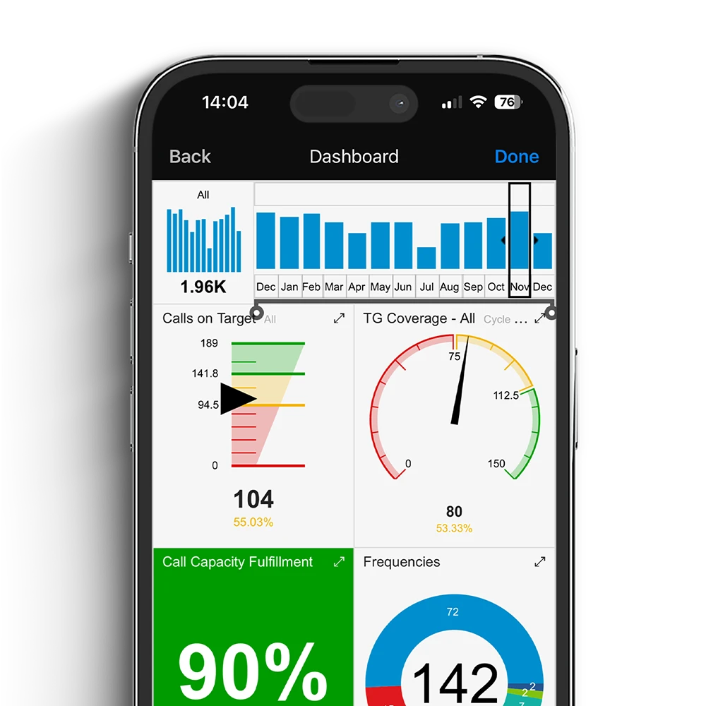
4–12 hafta içinde canlıya. Pazara hızlı çıkış, hızlı geri dönüş — kurumsal projelerin uzayan takvimleri olmadan.
Dış danışman ve partner zincirine gerek yok. CRM'i kendi ekibinizle yönetin; maliyet öngörülebilir kalır.
Online-first CRM. Saha temsilcisinin her etkileşimi merkez panoya anlık yansır — bekleme yok, kayıp veri yok.
Tek paket, her şey dahil. Eklenti faturası yok, vendor lock-in yok. Veri sizin, dışa aktarımı kolay.
Aynı vaadi sunan iki yol, çok farklı sonuçlar. On başlıkta neyin değiştiğini görelim.
Sezgiselliği ve kullanım kolaylığı, ekibimizin tüm üyeleri için erişilebilir kılıyor.Dorota R. · CEO, Polonya
Yazılımın arkasındaki insanlar farma pazarının karmaşıklığını anlıyor ve değişen ortama hızla adapte oluyor.Yiannakis M. · Ticari Direktör, Kıbrıs
İşin tüm değişimleri çevik, hızlı ve etkili bir programa yansıyor.Jose Antonio V. · SFE Yöneticisi, İspanya
Tüm kilit metrikleri izlemek ve ölçmek için hayati analizler elde edip raporlar oluşturabiliyoruz.Crispin W. · Ulusal Satış Müdürü, İngiltere
Farklı seviyelerde hızlı, doğru ve objektif bilgi; satış ekibimizi doğru değerlendirmemi sağlıyor.Darius D. · Ülke Müdürü, Çekya
Uyarlanabilir, amaca özel, sade ama etkili. Ekiple çalışmak bir zevk.Jana K. · Ürün Müdürü, Slovakya


Müşteri etkileşimini nasıl iyileştireceğinizi ve satış ekibi performansını nasıl artıracağınızı kişiselleştirilmiş bir demoda gösterelim.